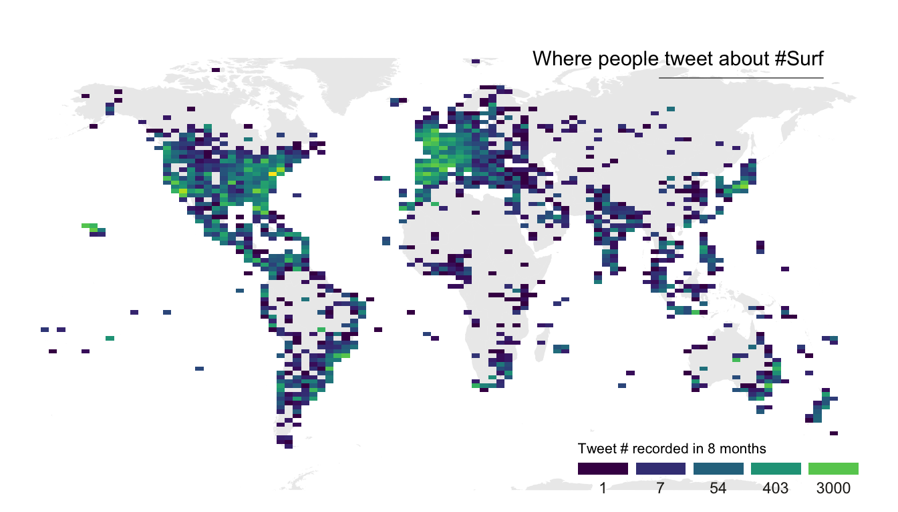
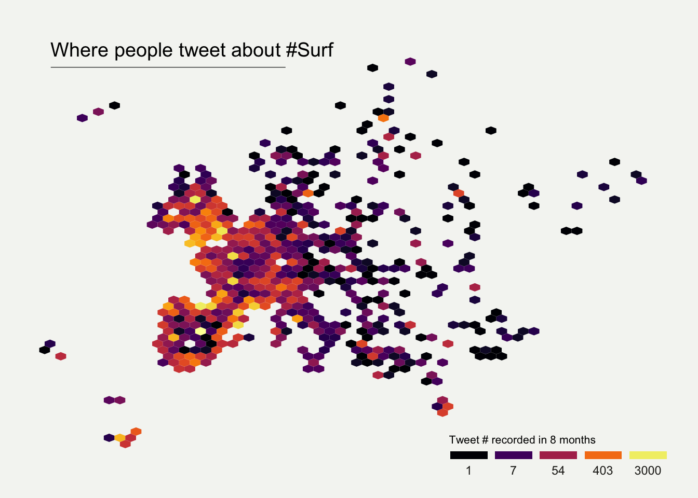

Several techniques exist to visualize the distribution of two variables
in the same time (2D distribution).
The R graph gallery dedicates a whole
section to it.
The idea is to count the number of observation within a particular area
of the 2D space and represent this count by a color. This can method can
be applied to maps using hexagones or squares, resulting in hexbin maps
and 2d histogram maps.
In this post a list of
GPS coordinates
is used as input data. It comes from a
project
that harvested and geocoded a list of 200k tweets talking about
#surf.
2d histogram maps
For 2d histogram maps the globe is split in several squares, the number
of tweet per square is counted, and a color is attributed to each
square.
-
ggplot2 offers the geom_bin2d() function
that does all the calculation for us and plot the squares.
-
the
geom_polygon() function is used to show the world map
in the background.
annotate() is used to add a title.-
the
guide option of scale_fill_viridis is
used to create a nice legend.

# Libraries
library(tidyverse)
library(viridis)
library(hrbrthemes)
library(mapdata)
# Load dataset from github
data <- read.table("https://raw.githubusercontent.com/holtzy/data_to_viz/master/Example_dataset/17_ListGPSCoordinates.csv", sep=",", header=T)
# Get the world polygon
world <- map_data("world")
# plot
ggplot(data, aes(x=homelon, y=homelat)) +
geom_polygon(data = world, aes(x=long, y = lat, group = group), fill="grey", alpha=0.3) +
geom_bin2d(bins=100) +
ggplot2::annotate("text", x = 175, y = 80, label="Where people tweet about #Surf", colour = "black", size=4, alpha=1, hjust=1) +
ggplot2::annotate("segment", x = 100, xend = 175, y = 73, yend = 73, colour = "black", size=0.2, alpha=1) +
theme_void() +
ylim(-70, 80) +
scale_fill_viridis(
trans = "log",
breaks = c(1,7,54,403,3000),
name="Tweet # recorded in 8 months",
guide = guide_legend( keyheight = unit(2.5, units = "mm"), keywidth=unit(10, units = "mm"), label.position = "bottom", title.position = 'top', nrow=1)
) +
ggtitle( "" ) +
theme(
legend.position = c(0.8, 0.09),
legend.title=element_text(color="black", size=8),
text = element_text(color = "#22211d"),
plot.title = element_text(size= 13, hjust=0.1, color = "#4e4d47", margin = margin(b = -0.1, t = 0.4, l = 2, unit = "cm")),
)
Hexbin maps
Hexbin maps are done using pretty much the same code.
Here, geom_hex() is used to create the hexagones. Note the
bins option allowing to control the bin size, and thus the
hexagone size on the map.

# Libraries
library(tidyverse)
library(viridis)
library(hrbrthemes)
library(mapdata)
# Load dataset from github
data <- read.table("https://raw.githubusercontent.com/holtzy/data_to_viz/master/Example_dataset/17_ListGPSCoordinates.csv", sep=",", header=T)
# plot
data %>%
filter(homecontinent=='Europe') %>%
ggplot( aes(x=homelon, y=homelat)) +
geom_hex(bins=59) +
ggplot2::annotate("text", x = -27, y = 72, label="Where people tweet about #Surf", colour = "black", size=5, alpha=1, hjust=0) +
ggplot2::annotate("segment", x = -27, xend = 10, y = 70, yend = 70, colour = "black", size=0.2, alpha=1) +
theme_void() +
xlim(-30, 70) +
ylim(24, 72) +
scale_fill_viridis(
option="B",
trans = "log",
breaks = c(1,7,54,403,3000),
name="Tweet # recorded in 8 months",
guide = guide_legend( keyheight = unit(2.5, units = "mm"), keywidth=unit(10, units = "mm"), label.position = "bottom", title.position = 'top', nrow=1)
) +
ggtitle( "" ) +
theme(
legend.position = c(0.8, 0.09),
legend.title=element_text(color="black", size=8),
text = element_text(color = "#22211d"),
plot.background = element_rect(fill = "#f5f5f2", color = NA),
panel.background = element_rect(fill = "#f5f5f2", color = NA),
legend.background = element_rect(fill = "#f5f5f2", color = NA),
plot.title = element_text(size= 13, hjust=0.1, color = "#4e4d47", margin = margin(b = -0.1, t = 0.4, l = 2, unit = "cm")),
)